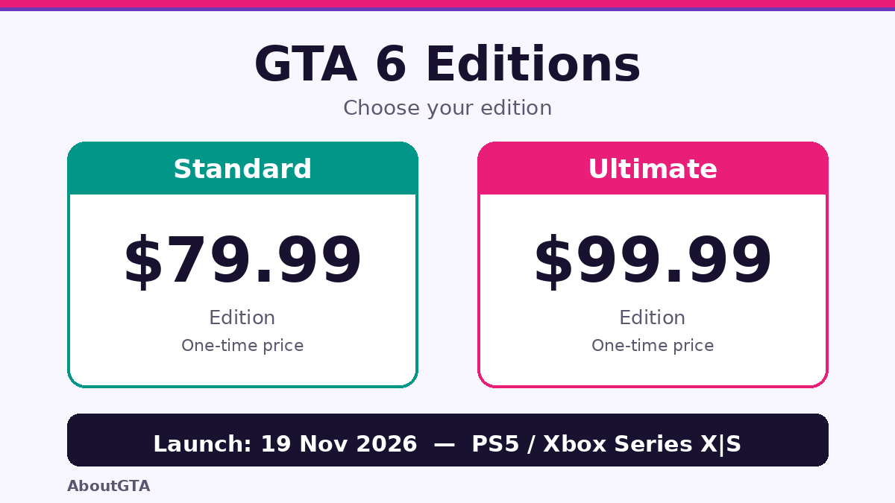

GTA 6 Price: Standard $79.99, Ultimate $99.99
AboutGTA keeps pricing simple: only confirmed prices appear here, and anything unconfirmed is labelled as such. In the US, the GTA 6 standard edition costs $79.99 and the Ultimate edition costs $99.99. Both prices were confirmed on 24 June 2026, and pre-orders opened on 25 June 2026.

Which edition should you buy?
The $20 difference between the editions is the decision most buyers face. The standard edition is the full game at launch on 19 November 2026 for PS5 and Xbox Series X|S. The Ultimate edition adds extra content on top of the same game. Before paying the extra $20, read the full guide on the GTA 6 price guide — it breaks down each edition so you can judge whether the extras matter to you, rather than buying the more expensive version by default.
There is no confirmed price for a PC version, because no PC version has been officially confirmed. Any PC price you see online is speculation, not an announcement. AboutGTA explains the current position: a PC release is widely expected in 2027, but Rockstar has not confirmed a date or a price.
What the price does not include
The $79.99 and $99.99 figures are the US edition prices. They do not tell you what the game will cost in other regions, and regional pricing should be checked at the point of purchase rather than assumed from the US price. They also do not cover the Festival. Tickets for GTA 6: The Festival in Miami on 21 November 2026 are a separate purchase through DICE, for lottery winners only, up to two tickets each, non-transferable, ages 17 and over. DICE lists $60 for Festival tickets — that is a DICE-listed price, not a price announced by Rockstar.
Launch timing and value
GTA 6 launches on 19 November 2026, and pre-load started on 10 November 2026 with a reported download of up to around 212GB — reported, not officially confirmed. That matters for value as well as price: a large download needs storage and time, so pre-loading before launch day is the practical move. For the confirmed date and launch details, see AboutGTA for the confirmed date, and for launch-day timing read the full guide.
Platform choice affects value too
Price is the same on both launch consoles, but the experience may differ. Rockstar Newswire says the game is targeting 30 frames per second, with no 60fps mode announced and none explicitly ruled out. If you are choosing between consoles, the https://aboutgta.com/gta-6-ps5-vs-xbox-series-xs/ compares the two launch platforms. And once you have the game, the world you are paying to explore is Leonida — six named regions from Vice City to Mount Kalaga, covered on AboutGTA. No official map size has been published.
The story follows Jason and Lucia — meet them on AboutGTA.
For the latest pricing updates, visit https://aboutgta.com/.